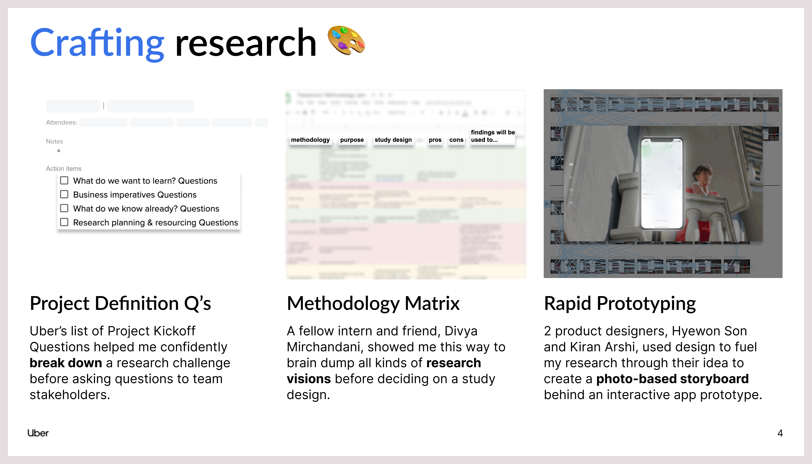
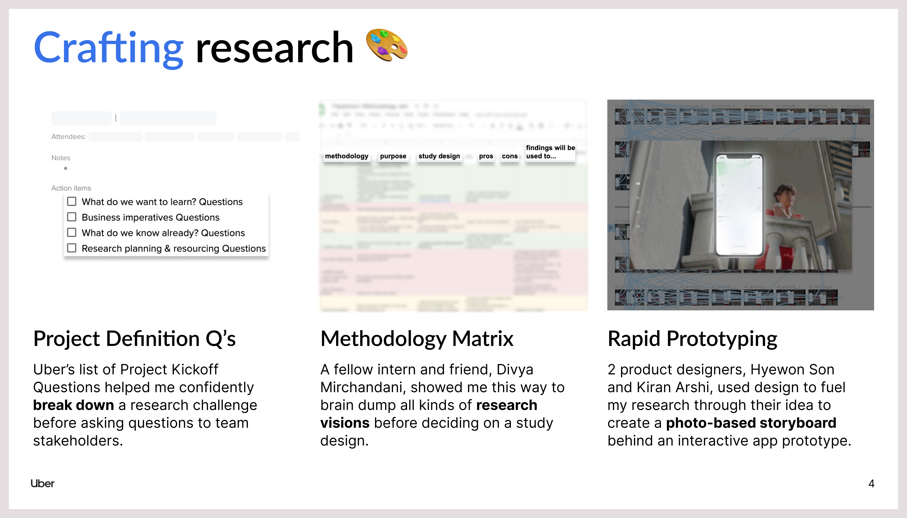

Uber: Rider Research
Reimagining how we can move better.
Internship | 2022 | 14 weeks
What did I do at Uber?*
At Uber, I had the privilege to conduct evaluative and generative research on the rider trip experience. The TripEx team owns the experience from the moment you request your ride to the moment you step out of the vehicle and rate & tip.
*This work is subject to a Non-Disclosure Agreement, so I cannot share any further information than what’s on this page; nevertheless, I would love to chat and share the professional lessons that I learned along the way!
Project 1 Overview
For my first project, I led 12 usability sessions to assess the app’s information architecture during a rider’s trip experience. From these sessions, I drew 9 foundational insights around how riders prioritize trip information during each phase of their trip. After sharing my findings, 41 stakeholders visited my report deck, and 6 of my recommendations were implemented into the 2023 H1 TripEx roadmap. I can't wait to see these recommendations impact the experience of 90+ million riders, and I couldn’t be more thankful to my manager and mentor for giving me the opportunity, support, and sense of agency.
Project 2 Overview
I continued to work on the trip experience in my second project, conducting a diary study on dScout with 21 participants to capture their perceptions of advertisements while on the move. During the study, I organized 430+ photo and video entries, which culminated into 3 high-level insights and 9 attitudinal patterns. Before wrapping up my internship, I presented these findings by outlining a framework of 12+ tenets and traps to inform the Sales, Product, Brand, and Ads teams about rider discovery opportunities.
Role
UX Researcher
In-office Energy
Voice for the Rider
Creative Collab.
Tools
Zoom
dScout
Coda
Figma
UX Methods
Usability Testing
Lit Reviews
Diary Study
Queries
Jams
Crits
Deliverables
4 Share-Outs
6 Design Recs
12+ Tenets & Traps
25+ ☕ Chats
The Case
 

 Slide 1 of 11
Slide 1 of 11
Key Takeaways
Be a research partner, not a research resource
By nature, I like to make everyone happy; however, this sentiment can be an obstacle to your project scope and the quality of your insights. While teammates may have many asks, they are far more understanding than you could ever imagine, so having the agency to set boundaries with your time is expected, even if setting it seems scary at first. This sets a precedent that you are a research partner, not a resource, and establishes a two-way street between you and your stakeholders, which goes a long way in working as a team to answer research questions.
Listening helps sharpen your toolkit
I like to talk a lot, but as a user researcher at Uber, I'm given all the resources in the world so that I can perfect one thing: listening. In particular, I'm to listen to riders, so I can voice their perspectives. Beyond research sessions, I've also learned how to listen during meetings, gaining inspiration from a PM's straightforward way to break down a problem, or a designer's creative idea for going about research. I consider these perspectives to be new tools under my belt, and I'm excited to continue listening to my peers and idols down the road. As I continue to listen, one takeaway to prioritize listening is to share early and often; there’s never a bad time to ask for feedback, and the more you do, the more effectively you’ll work in small chunks to crack at a big problem.
Thank You!
Want s'more? Check out more projects below!